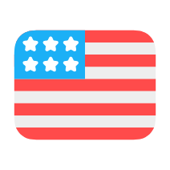
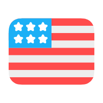

Sofia Cardenas
+52 (66) 2163 1022 ·
sofiacardenasrosas@gmail.com
Soy estudiante de Ingeniería en Sistemas de Información con gran interés en el desarrollo de software. Busco oportunidades que me permitan aplicar mis conocimientos y habilidades para contribuir en el desarrollo de soluciones innovadoras.
 
